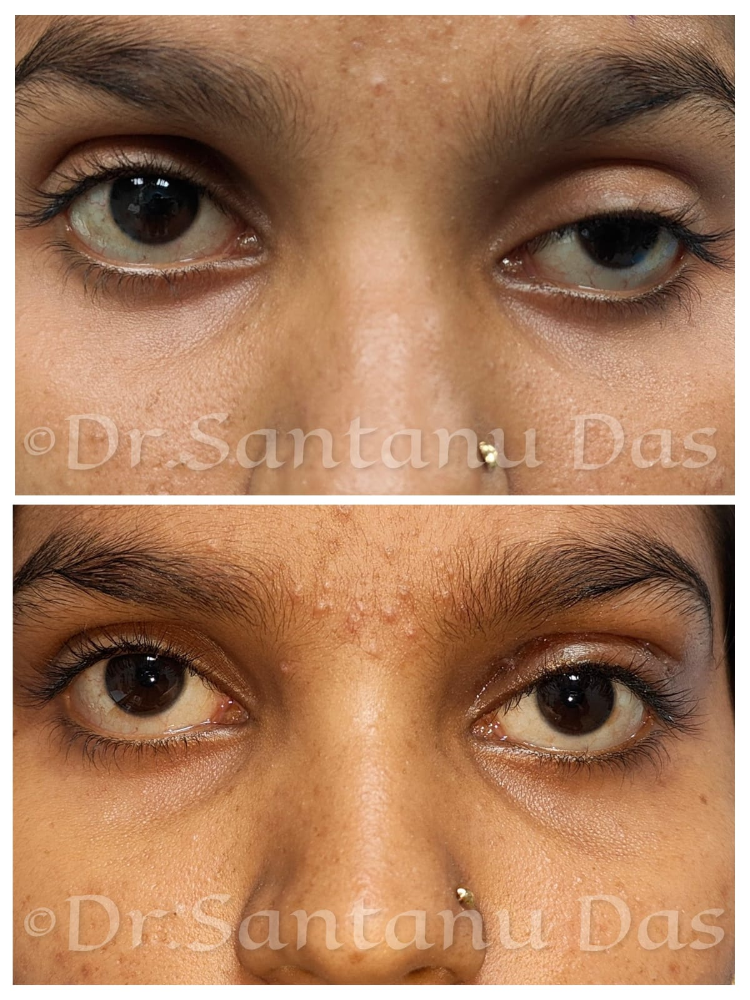

Clinical & Procedural Gallery
A visual archive showcasing clinical cases, diagnostics, surgical evaluations, and reconstructive management procedures.

Vision & Astigmatism Analysis
Clinical evaluation of upper lid drooping affecting visual axis and astigmatism correction.

Ectropion Correction
Surgical management for outward turning of the eyelid and laxity resolution.

Entropion Repair View
Treatment addressing inward turning of the eyelid protecting the ocular surface.

Upper Lid Laceration Repair
Precise cosmetic reconstruction and alignment following structural eyelid trauma.

Active Phase Presentation
Manifestation of autoimmune inflammation and soft tissue involvement around the eye.

Rehabilitative Assessment
Evaluation post-management and decompression treatment milestones.

MRI Extraocular Muscles
Diagnostic imaging showing thickened extraocular muscles characteristic of TED.

Trauma Presentation 1
Acute assessment of periorbital tissue injury and swelling following impact.

Trauma Presentation 2
Comprehensive evaluation of soft tissue damage prior to surgical stabilization.

Post-Intervention Reconstruction
Post-surgical recovery following orbital floor fracture fixation and soft tissue repair.

Dermis Fat Grafting
Socket reconstruction utilizing dermis fat grafts followed by custom prosthetic eye placement.

Post-Evisceration Prosthesis
Artificial eye placement following primary evisceration and PMMA ball implant procedure.